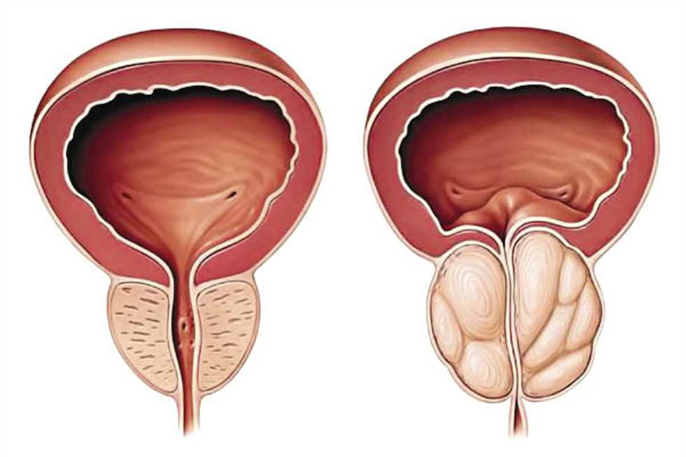

سر جديد للرجال : سوف تتخلصون من مشاكل البروستات خلال أسابيع! دعونا نكتشف كيف
مقدمة :
كشف رجل أن الكثر من الرجال عرضة لمشاكل البروستات . مرحبا! أنا محمد و عمري 34 عاماً . سأخبركم اليوم عن تجربتي في التغلب على مشاكل البروستات . تعد مشاكل البروستات أحد المشاكل الصحية الشائعة التي يمكن أن يواجهها الرجال. ومن بين هذه المشاكل هو تضخم البروستات، والذي يؤثر على وظيفة البروستات وقد يسبب ألمًا وصعوبة في التبول.
ما هو تضخم البروستات ؟
تضخم البروستات هو حالة تصيب الرجال بشكل شائع عندما يتقدمون في السن، وتحدث عندما يتزايد حجم البروستات بشكل طبيعي مع التقدم في العمر، مما يمكن أن يؤدي إلى العديد من الأعراض الغير مريحة والمشاكل الصحية المرتبطة بالبروستات .
-
ومن بين الأعراض التي يمكن أن يتسبب بها تضخم البروستات الآتية:
- الإحساس بالتبول المتكرر والضعف في تدفق البول.
- الشعور بالألم عند التبول.
- الشعور بالحاجة الملحة للتبول، حتى إذا لم يكن هناك بول في المثانة.
- التهاب المسالك البولية.
- الارتجاع البولي.
- ضعف الانتصاب وصعوبة في القذف.
وتعد هذه الأعراض مزعجة وتؤثر بشكل كبير على نوعية الحياة، ولكن قد يتم التخفيف من الأعراض باستخدام المكملات الغذائية الطبيعية مثل RHINO.
كيف تخلصت من مشاكل البروستات في فترة قصيرة ؟

قمت بالبحث كثيراً في الموضوع و جربت طرق عديدة و لكن لم ينفع شيء و بالنهاية جربت منتجاً رائعاً يسمى RHINO .
لسوء الحظ، أعرف عن مشاكل البروستات نتيجة تجربة شخصية. قبل بضع سنوات، تسبب الانخفاض في مستويات هرمون التستوستيرون في جسدي، المرتبط بالعمر، في إصابتي بمشكلة كبيرة في البروستات .يعد انخفاض مستويات هرمون التستوستيرون أحد السمات الرئيسية في مرحلة الشيخوخة عند الرجال أو الانتهاكات الخطيرة في التمثيل الغذائي للذكور. بشكل أساسي، فإن نقص هرمون التستوستيرون هو الذي يؤدي إلى ضعف الرغبة الجنسية وانخفاض الرغبة الجنسية واضطراب التبول، فضلاً عن زيادة الوزن وفقدان كتلة العضلات.
لقد أنقذني هذا المكمل الغذائي RHINO و هو منتج رائع بعنى الكلمة و لم اعاني من اي أثار جانبية .
يعتمد هذا المكمل الغذائي على مكونات طبيعية 100% !و من بين هذه المكونات :
الجينسينج الاحمر

يحتوي الجينسينج الاحمر على مركبات مضادة للالتهابات مثل الصابونين تقضى على مشاكل البروستات ويحتوي على مضادات للميكروبات والفيروسات ويحتوي مضادات للأكسدة تنشط المناعة مما يقضي على مشاكل التبول الناتجة عن مشاكل البروستات
نبات القراص

تحتوي الأوراق والجذور والبذور من نبات القراص على مواد فعالة طبيعية مثل البيتا-ستيرويدات والتربينوئيدات والمواد المضادة للإلتهابات، والتي تساعد على تقليل مشاكل البروستات وتحسين الأعراض المرتبطة بها.
الماكا

- تساعد على التخلص من الضعف الجنسي و يمكن أن تساعد جذور الماكا على التخلص من ضعف الانتصاب
الزنجبيل

- يوجد في الزنجبيل فيتامين أ وفيتامين ج وفيتامين هـ وبيتا كاروتين والزنك، وجميع مضادات الأكسدة القوية التي تدافع عن البروستاتا من الجذور الحرة الضارة التي تُسرع تطور التضخم
تونكة علي

- تناول تونكات علي بانتظام إلى تحفيز الإثارة الجنسية، وتحسين ضعف الانتصاب لدى الرجال، كما اتضح أنه يحسن حركة الحيوانات المنوية وتركيزها، مما يزيد من خصوبة الذكور
و أيضاً بعض المكونات مثل : " جينسينج أحمر - غوارانا - سيلينيوم - كافيين - تورين - فيتامينات ب1-ب6-ب12 "
التأثير الرئيسي :
- يساعد في التخلص من أعراض التهاب البروستات حتى المزمنة .
تأثيرات إضافية
- يساعد في التخلص من مشاكل البروستات
- يساعد في منع سرعة القذف
- يحفز الفاعلية الجنسية
- يساعد في تطبيع وظيفة المثانة
- يساعد في تحسين حالة الأوعية الدموية
آثار جانبية :
- لا يوجد. إنه طبيعي 100%
كيف تخلصت من مشاكل البروستات في فترة قصيرة ؟
تناول حبتين في المساء قبل وجبات الطعام
تحذير : هذا المنتج للأشخاص أعمارهم +18 له تأثير فعال على البروستات بفضل التركيبة المختارة خصيصًا من المكونات الطبيعية، والتي توفر تأثيرًا مضادًا للالتهابات وتقويًا. يزيل كل الجراثيم المسببة لمشاكل البروستات ، ويساعد في تحسين بنية ووظيفة البروستات . يُنصح باستخدامه لجميع من يعانون من مشاكل البروستات . RHINO هو الخطوة الأولى لتحسين صحة الرجال، بالإضافة إلى التخلص من الأعراض المزعجة للبروستات .تقدم الشركة المصنعة عرضًا خاصاً عن شرائك المكمل الغذائي RHINO ويمكن طلب المنتج بسعر مخفض بنسبة 50% لكل سكان الجزائر الأن . وكل شخص حصل على نتيجة ممتازة سينصح أصدقائه بهذا المنتج الرائع!
ما هي علامات تدهور البروستات ؟
-
ألام بالجزء الأسفل من البطن :
- كثرة التبول ، حرق في مجرى البول
- الشعور "بعدم إفراغ المثانة بالكامل"
- صعوبة التبول (قوة خروج البول ضعيفة)
- اضطراب المسالك البولية
-
مشاكل جنسية :
- انخفاض الرغبة الجنسية
- ضعف الإنتصاب
-
مشاكل بالقذف :
- سرعة القذف أو مشاكل في تحقيقه
- ضعف القذف
- الشعور بالتعب بسرعة وتهيج الجسم
كيف يمكنك شراء RHINO ؟
- ملئ النموذج الرسمي للطلب بالأسفل
- بعد ذلك سوف يتم التواصل معك لتأكيد عنوان الوصول
- يتم الدفع فقط بعد إستلام المنتج و هو الشيء الذي جعل الكثير مطمئنون من جودة هذا المنتج
- بعد ذلك يمكنك إستلام المنتج عن طريق عامل التوصل